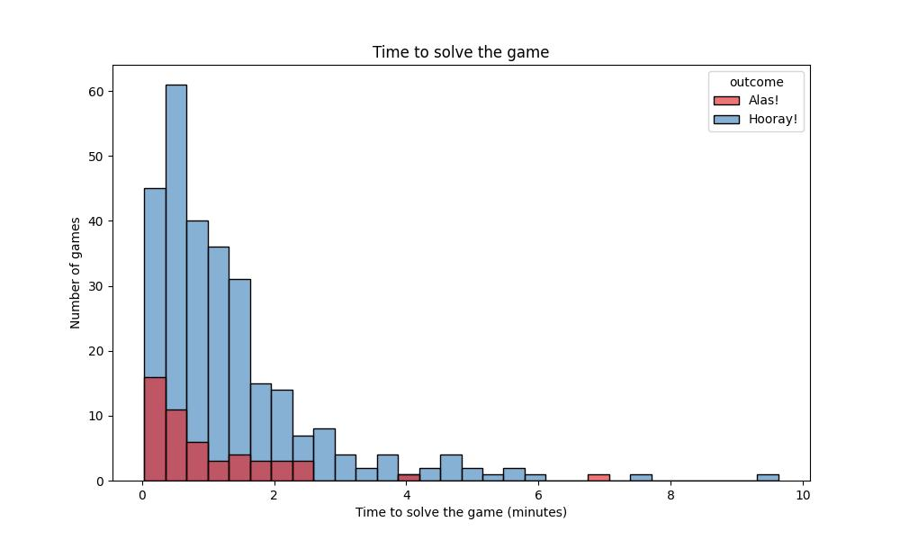
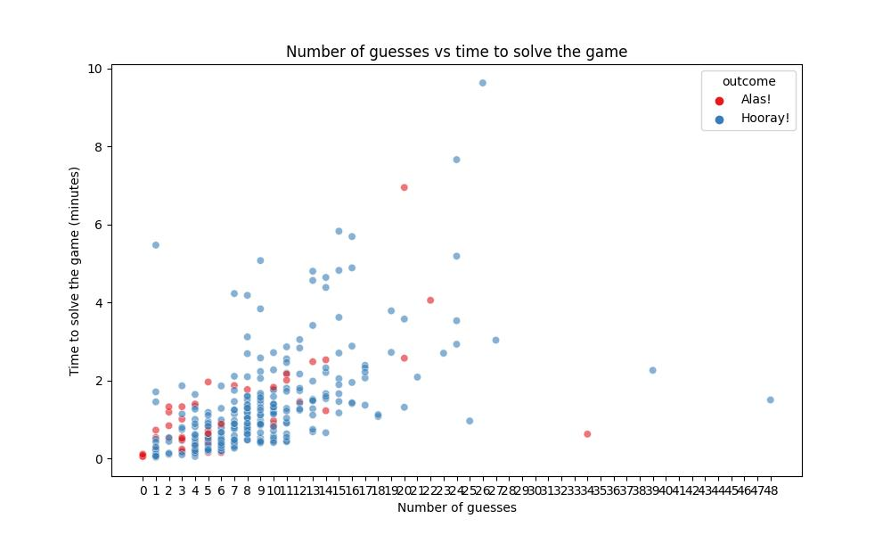
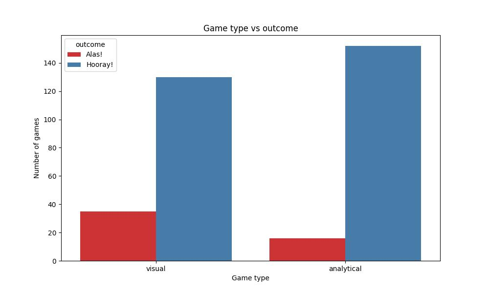
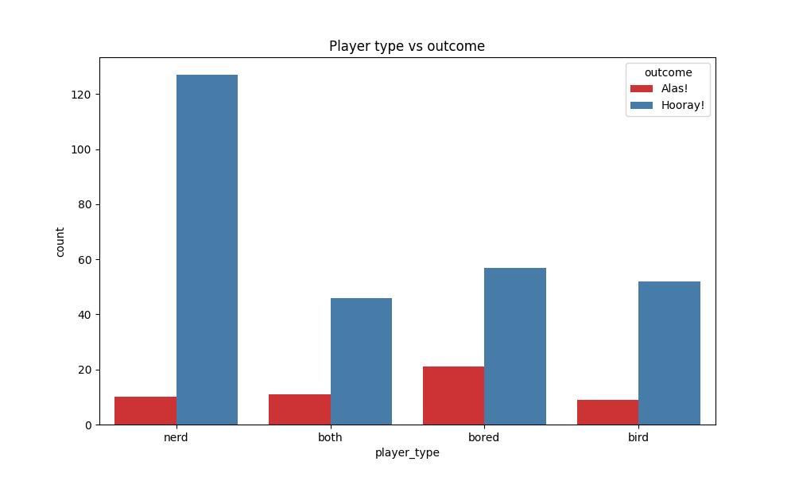
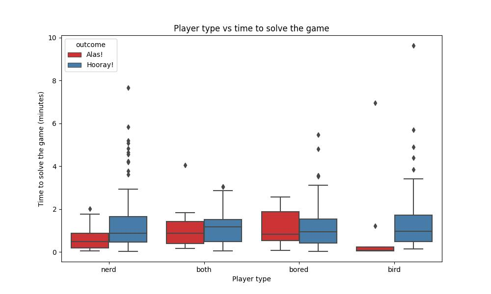
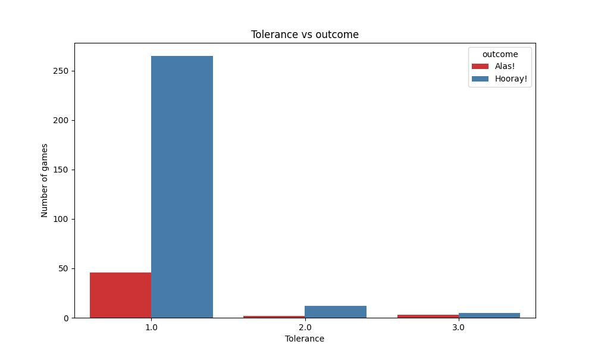

We produced a few graphs to visualize the game’s data. They will be updated periodically.
How long does it take to win or lose a game?

This bar graph displays the number of games solved in 1 minute, 2 minutes, etc.
How many guesses do players take on average?

This scatterplot shows the relationship between the number of guesses a player takes before achieving success (“Hooray!”) and the total time taken for each game.
Is the visual mode easier to solve than the analytical one?

This figure displays two bar graphs split between the visual and analytical modes of our game. These modes are randomly assigned with an equal probability.
Do self-identified player types perform better in one mode?

While player type is an unreliable statistic because players get to label themselves, we still find the data interesting. Here, we have divided the data by self-assigned player type to see how often a certain type is selected.
How long do players take on average to win/lose?

These box plots examine the time to solve the game segmented by player type. Each box plot shows the minimum, maximum, the middle 50% of games, and outliers rejected by statistical analysis.
How does the game-level affect game play?

These bar graphs are split by game level (1, 2, 3). Each level has a different tolerance: level 1 is 0.005, level 2 is 0.001, and level 3 is 0.0001. Players must guess a number within the tolerance of each level to solve the game. We did not control the level played. Instead, we kept the game level as an easter egg that players could find if they navigate to the “About” page.